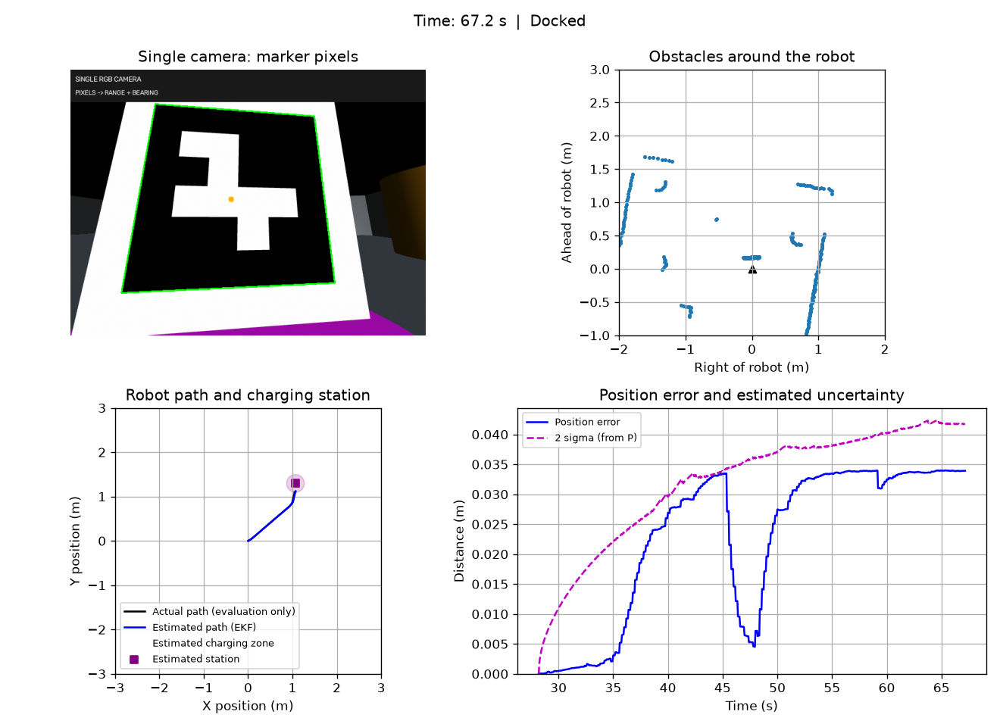

Group 36 · wanjun zhang
Project A
Student ID: 25202185
TurtleBot3 visual docking in MuJoCo
One RGB camera estimates marker range and bearing from pixels. Wheel encoders predict motion. An EKF combines them, while LiDAR selects safe paths and an LQR tracker controls the estimated state.
Simulation only. No physical-robot or electrical-charging validation is claimed.
Five-minute demonstration
Student-recorded demonstration (4 min 58.5 s): normal docking, estimated and true paths, and uncertainty. Only silent padding at the beginning and end was trimmed; the trial and narration were not sped up. This recording does not show a separate disturbed trial. Disturbed-trial measurements are listed in Results.
Open or download the demonstration video

Task and environment
The 3 × 3 m room contains six obstacles. Robot and station poses vary by seed. In the fixed seed 0 demonstration, an orange box lies 30% along the direct start-to-station line. A free corridor remains available, but the robot must navigate around obstacles.
The charging zone is a 0.20 m radius disk centred beneath the ArUco marker. The robot must face the marker and place at least one wheel contact inside it. It moves forward or turns in place; it does not reverse its body.
During exploration, scan-derived long-wall evidence rejects headings directly toward a nearby visible wall. Tangential travel is allowed. This heuristic does not apply to final visual docking and does not use known wall coordinates.
Model and coordinate frames
O — fixed frame established at the first accepted marker observation
└── B — robot body: x forward, y left, z up
├── C — camera optical: x right, y down, z forward
│ t_BC = (0.064, 0, 0.125) m; upward pitch 10°
└── L — LiDAR: axes aligned with B
t_BL = (−0.032, 0, 0.182) mThe first accepted observation defines the current robot pose as (0, 0, 0). This is a fixed reference convention, not an absolute-world pose measurement. Camera points transform as p_B = R_BC p_C + t_BC.
ẋ = v cos θ ẏ = v sin θ θ̇ = ω ds = a(ΔφL + ΔφR)/2 dθ = a(ΔφR − ΔφL)/b wheel radius a = 0.033 m; wheel separation b = 0.16 m
The discrete prediction uses the exact constant-turn arc with a stable zero-turn limit. Linearized robot controllability rank is 3 at nonzero straight speed and 2 at rest. The joint relative landmark observation has instantaneous rank 2 and a common translation/rotation ambiguity. The anchored frame does not make global position observable.
Pixels → estimate → wheel commands
Sensing and calibration
ArUco ID 7, DICT_4X4_50, known black-square side 0.18 m. Four detected pixel corners and OpenCV iterative PnP give marker pose. Known size supplies monocular metric scale; a single pixel direction alone cannot give distance.
640 × 480 image, FOVy 100°, fx = fy ≈ 201.384 px, cx = 319.5, cy = 239.5, zero distortion. Intrinsics and mounting extrinsics come from the simulation model and are checked against rendered fixtures, not physical calibration.
13/15 calibration views accepted; two very close oblique views do not show the complete marker. Accepted maximum range error ≈ 0.00608 m and bearing error ≈ 0.0542°. Calibration evidence.
Joint EKF
State [x, y, θ, lx, ly]. Encoder increments predict the robot pose. Camera horizontal range and bearing correct the joint robot/landmark estimate. Full cross-covariance is retained; updates use Joseph form and reject NIS > 16.
P⁻ = A P Aᵀ + B Q Bᵀ r = √((lx−x)² + (ly−y)²) β = atan2(ly−y, lx−x) − θ
Marker normal is smoothed separately and is not included in the five-state covariance. During camera loss the filter predicts with encoders only.
| Parameter | Value |
|---|---|
| Physics / control / camera / LiDAR | 0.002 s / 20 Hz / 5 Hz / 10 Hz |
| Encoder noise | Scale +0.001 / −0.001; increment std 0.0015√(dt/0.05) rad |
| RGB / LiDAR noise | Pixel std 1.5; LiDAR std 0.006 m and 1% dropout |
| Additional EKF Q | diag[0.004²dt+(0.03|ds|)², rad(1.5)²dt+(0.08|dθ|)²], plus encoder-derived covariance |
| Camera R | diag[(0.008+0.012r²)², rad(1)²] |
LQR trajectory tracking
Using estimated lateral and heading errors, ω = −K[e_y, e_θ]ᵀ. Design speed 0.08 m/s and dt 0.05 s; Ad = [[1, 0.004], [0, 1]], Bd = [[0.0001], [0.05]]. Q = diag[100, 32.8281], R = 11.1111; K ≈ [2.8642, 1.7752]. These are control costs, distinct from EKF noise covariances.
Turn rate is limited to ±0.6 rad/s; final speed ≤0.025 m/s and turn rate ≤0.3 rad/s. Alignment uses 5 cm entry / 12 cm exit hysteresis to prevent switching oscillations. Final completion requires estimated target error <0.012 m, wheel entry, heading error <5°, fresh vision and a 2 s hold. Low-speed docking and mission transitions are engineering adaptations, not a global stability proof.
Ground truth is not controller input
Navigator.command receives estimated state, scans and observation age. observe receives RGB pixels. Simulation state is used internally to generate sensors, and separately to evaluate paths, errors, collisions and real wheel contact. It is never injected as the EKF position observation or tracking pose.
Measured performance
Development trials completed with no collision and real wheel entry.
Geometry, model, covariance, alignment and visible-wall regression checks passed.
| Seed | LiDAR σ (m) | Vision loss (s) | Time (s) | Position RMSE (m) | Dock error (m) | Heading error (°) | Pass |
|---|
Download the full quantitative results
Position RMSE starts after first visual initialization. The uncertainty curve is 2√(Pxx+Pyy), not an exact 2D 95% confidence bound. Dropout begins five seconds after initialization. A faster disturbed run does not mean disturbance is beneficial; changed paths can change subsequent noise samples.
These are selected development trials, not a statistical or universal success guarantee. The reactive planner may stall in other layouts. An earlier midpoint-obstacle candidate timed out; the current fixed demo uses the 30% position. No hardware performance is claimed.
Install and reproduce
Repository URL pending. Set it in website/config.js before final submission.
Windows, Python 3.11 and a working OpenGL driver. In the downloaded/cloned code repository:
py -3.11 -m venv .venv .\.venv\Scripts\python.exe -m pip install -r requirements.txt .\.venv\Scripts\python.exe main.py --seed 0
With the environment activated:
python main.py --seed 0 python main.py --seed 0 --camera-dropout 4 python main.py --seed 0 --lidar-sigma 0.012 python main.py
Click the dashboard and press Space/P to pause. Closing normally saves CSV/JSON/PNG to outputs/monocular/. Identical arguments overwrite their files. Headless runs still need OpenGL. The initial monocular version was installed and run in a separate fresh environment; the current navigation revisions have subsequent regression and task tests on the same machine.
python -m unittest tests.check_walls tests.check_alignment tests.check_camera tests.check_discovery tests.check_assignment_alignment python tools/analyze_model.py python tools/validate_camera_calibration.py python tools/validate_discovery.py
Individual contribution
wanjun zhang · 25202185 · sole student member · 100% of team contribution.
Task specification, simulation review/testing, integration decisions, final submission and oral explanation.
Generative AI declaration
Codex assisted implementation, debugging, documentation and automated validation. A 100% team allocation does not imply work without AI assistance. No peer review or physical-hardware trial is claimed.
Course acknowledgement: the motion model, Joseph EKF update and LQR design were adapted from Assessment 3. Camera PnP, landmark initialization and docking logic are project extensions. Original robot asset licenses are retained in the repository.